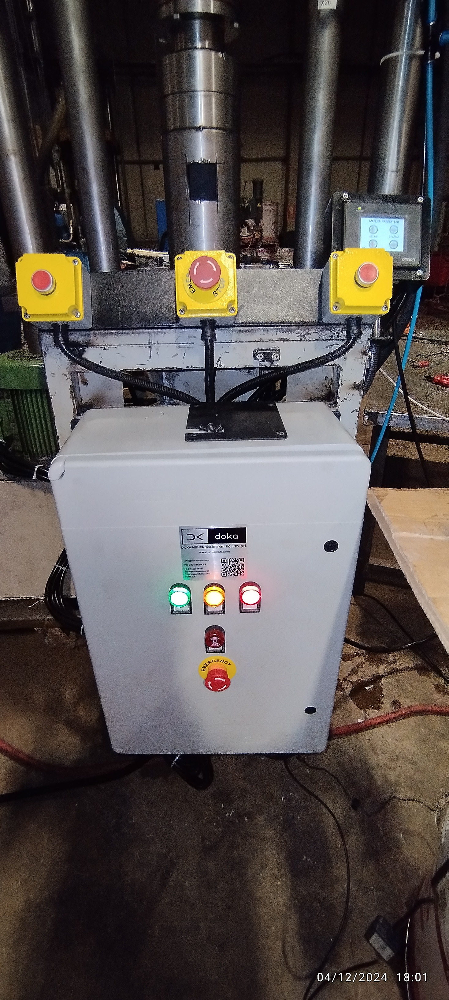

Proje Galerisi




50+ otomatik test senaryosu, yük hücreleri entegrasyonu, çok sensörlü veri toplama ve güvenlik kritik doğrulama ile hidrolik test sistemi. Tren vagon ve şasi dayanıklılık testleri için düzenleyici uyumlu sistem.
Tren vagon ve şasi dayanıklılık testleri için hidrolik test sistemi kurdum. 50+ otomatik test senaryosu geliştirdim; yük hücreleri ile yük ölçüm ve basınç sensörler ile hidrolik basınç izleme uyguladım. Çok sensörlü veri toplama sistemi ile gerçek zamanlı veri kayıt ve analiz sağladım. Güvenlik kritik doğrulama ve düzenleyici uyum kontrolü entegre ettim.
50+ önceden programlanmış test senaryosu ile el müdahalesinin azaltılarak doğru ve tekrarlanabilir test prosedürleri sağlandı.
Çok yük hücresi ile vagon ve şasi üzerindeki yük dağıtımının doğru ölçümü ve gerçek zamanlı analiz.
Test prosedürlerinin güvenlik sınırlar çerçevesinde yürütülmesini sağlayan kapsamlı doğrulama sistemi.
Tren vagon test standartlarında düzenleyici uyumluluk sağlayan otomatik uygulanabilirlik kontrolü.

Bu CV'deki tüm projeler Doka Mühendislik'in izniyle paylaşılmıştır. Gizlilik anlaşmalarına saygı göstermek amacıyla tescilli bilgiler, müşteri adları ve hassas teknik ayrıntılar genelleştirilmiştir.